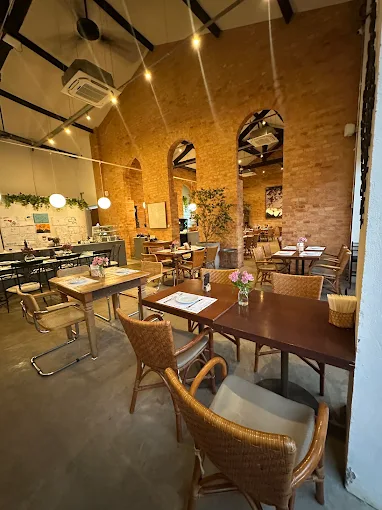
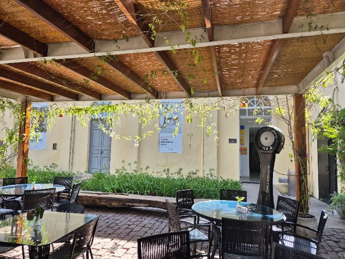
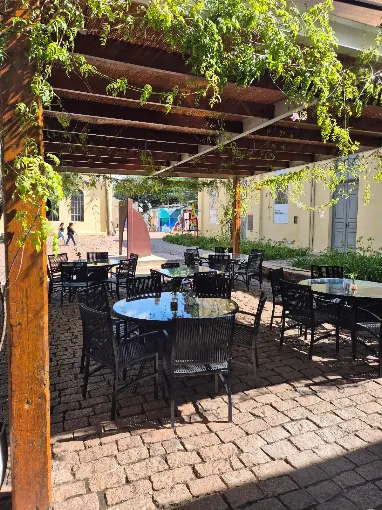
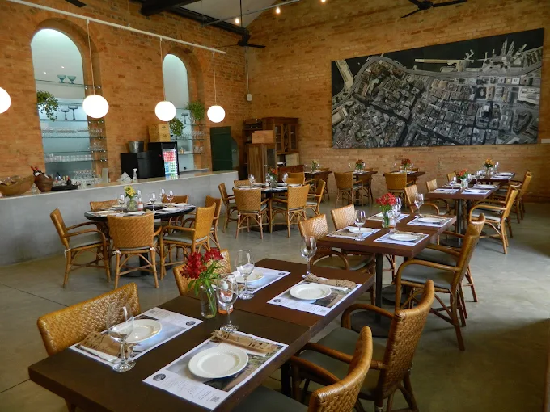
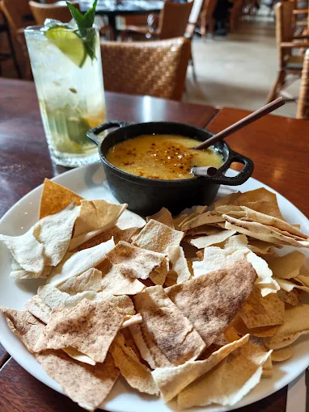
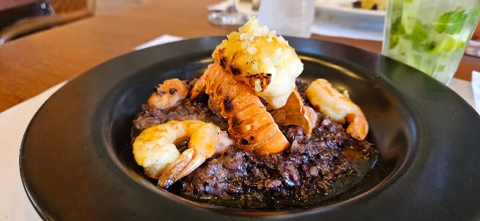

Qua — Dom
Almoço
↗
Almoço
no museu
Uma pausa entre arte, jardins e sabores autorais.
Cozinha brasileira contemporânea · Itu, SP
No coração de uma antiga fábrica, a mesa ganha novos sentidos. Ingredientes brasileiros, clássicos revisitados e o jeito acolhedor da Fafá.

Nossa casa
Idealizada pela Fafá, a Cozinha São Pedro nasceu para criar encontros. O cenário industrial da antiga Fábrica São Pedro dialoga com jardins, arte brasileira e uma cozinha cheia de personalidade.
O cardápio atravessa referências brasileiras e internacionais, valoriza ingredientes e cultura e abre espaço para as sugestões do chef — porque cada visita pode revelar algo novo.
Conheça o ambiente ↗Atmosfera





Arraste para explorar · Imagens da própria Cozinha São Pedro.
Aos sábados
Um dos sabores mais lembrados da casa, preparado com a identidade da Fafá e aquele cuidado que transforma almoço em memória.
Reservar para sábadoVenha viver
Rua Padre Bartolomeu Tadei, 09
FAMA Museu · Centro ·
Itu/SP
Qua e qui · 12h–16h
Sex · 12h–16h e 19h–23h30
Sáb
e dom · 12h–17h